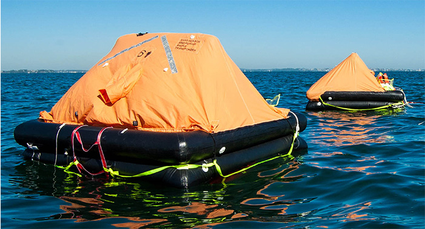

Радио и оборудование
 ООО «Электрик-Инжиниринг» производит следующие виды работ:- Поставка радио и навигационного оборудования;
- Установка, береговое техническое обслуживание и ремонт оборудования ГМССБ;
- Ежегодное освидетельствование оборудования ГМССБ судов под классом “Регистра Судоходства
Украины”, “Российского Морского Регистра Судоходства”, "Российского Речного Регистра", “Bureau Veritas”, “Lloyd’s Register”, “Det Norske Veritas”, “American Bureau of Shipping”, “Germanischer Lloyd”, “ClassNK”, "Rina";
- Проверка и испытание радионавигационного оборудования на борту судна;
- Установка, программирование, пуско-наладочные работы, обслуживание и ремонт радио и навигационного оборудования;
- Проверка, береговое техническое обслуживание и программирование АРБ;
- Проверка РЛО;
- Проверка, испытание и программирование ССОО (SSAS), ОСДР (LRIT);
- Установка, обслуживание, ремонт и ежегодная проверка регистраторов данных рейса (РДР / УРДР);
- Установка и обслуживание системы контроля дееспособности вахтенного помощника (СКДВП);
- Ежегодная проверка АИС.
Инженеры, выполняющие данные виды работ, обучены и сертифицированы ведущими производителями радио, навигационного и электронного оборудования: • NORTHROP GRUMMAN SPERRY MARINE • ACR ELECTRONICS • FURUNO • KVH • THRANE & THRANE • SAMYUNG • HEADWAY • JOTRON • KANNAD • MCMURDO • MARTEK • JRC • YOKOGAWA • FLIR • DANELEC • UNI-SAFE • ENTEL • BEAM.